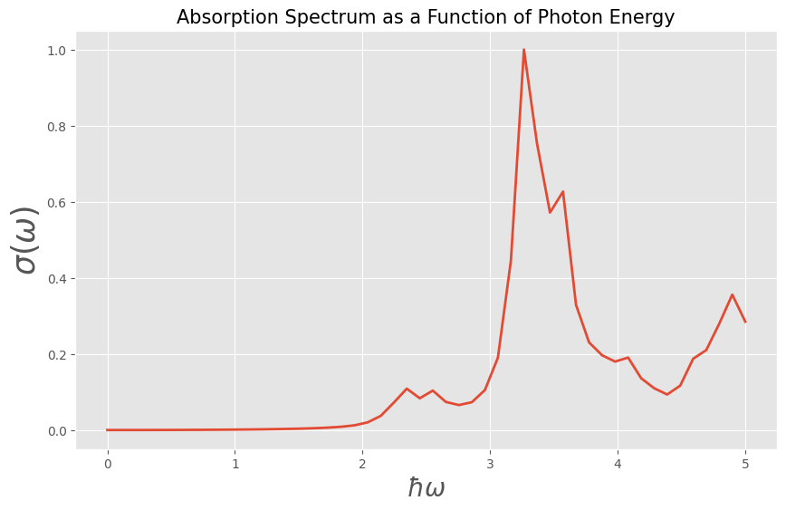

Welcome to GRANAD
GRANAD (GRAphene Nanoflakes with ADatoms) is a tight-binding simulation utility geared towards the exploration of systems at the intersection of solid state physics and quantum optics.
Features
- Computes electronic and optical properties
- Time-evolution of density matrix calculated via master equation
- Relies on JAX for performance and differentiability
Installation
Linux
The recommended way is to install with (mini-)conda.
First, set up miniconda: https://docs.anaconda.com/free/miniconda/index.html
Then, create a new environment
Activate the environment
Now, optionally install jupyter.
Finally, install the package with
Windows
To install on Windows, set up WSL first. Then, follow the instructions above.
Quickstart
In the following, we demonstrate how to compute the absorption spectrum in a triangular zigzag graphene flake in the random phase approximation (RPA). The code is listed below:
import jax.numpy as jnp
from granad import MaterialCatalog, Triangle
# get material
graphene = MaterialCatalog.get( "graphene" )
# cut a 15 Angström wide triangle from the lattice (can also be an arbitrary polygon)
flake = graphene.cut_flake( Triangle(15) )
# frequencies
omegas = jnp.linspace( 0, 5, 100 )
# compute the polarizability in the RPA
polarizability = flake.get_polarizability_rpa(
omegas,
relaxation_rate = 1/10,
polarization = 0,
hungry = 2 # higher numbers are faster and consume more RAM
)
# from the imaginary part of polarizability, obtain the absorption spectrum
absorption = polarizability.imag * 4 * jnp.pi * omegas
Plot the results
import matplotlib.pyplot as plt
plt.style.use('ggplot')
plt.figure(figsize=(10, 6))
plt.plot(omegas, absorption / jnp.max(absorption), linewidth=2)
plt.xlabel(r'$\hbar\omega$', fontsize=20)
plt.ylabel(r'$\sigma(\omega)$', fontsize=25)
plt.title('Absorption spectrum as a function of photon energy', fontsize=15)
plt.grid(True)
